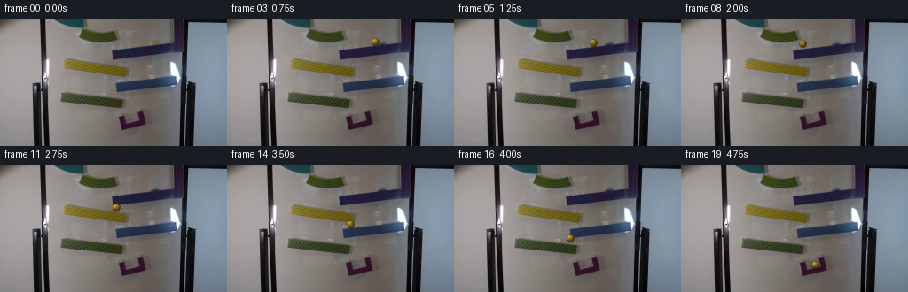
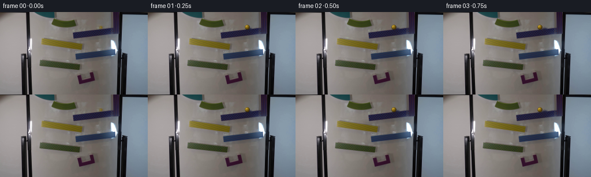
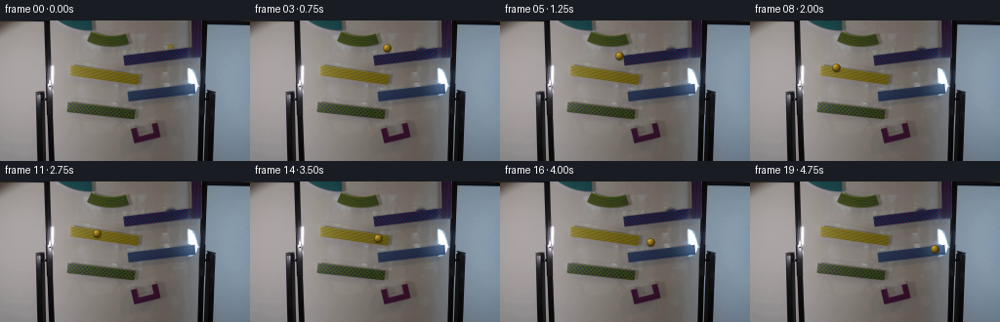
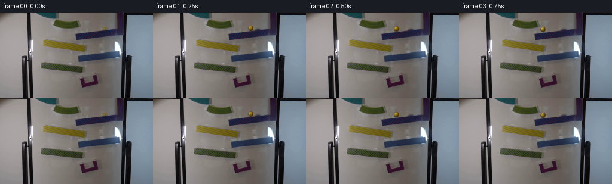
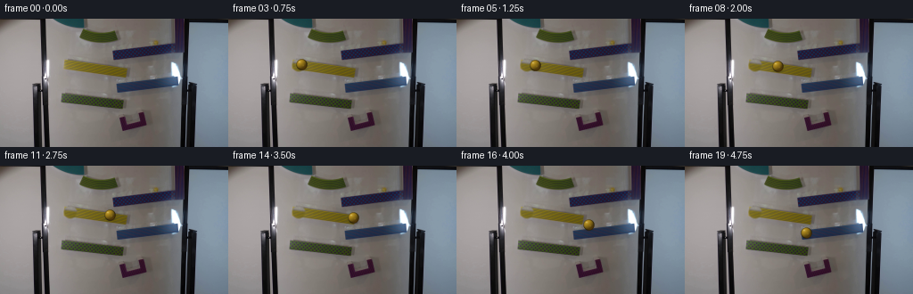
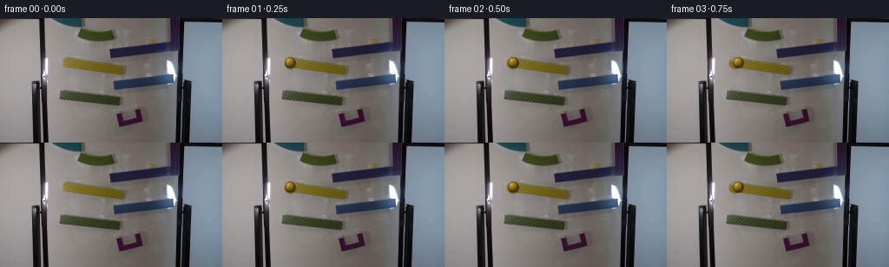

CODING AGENTS AS PIXEL WORLD MODELS
traex/DeepSeek-V4.1-Flash · 0107
点击播放 · 原生 RGB 像素
逐轮保存的候选
回放视频、检查图与代码变化。
每份候选均可单独播放。实际图片检查记录在下方工具轨迹中。
候选 01播放与检查图
点击播放 · 原生 RGB 像素


展开代码变化
--- 上一保存版本
+++ 本次保存版本
@@ -0,0 +1,186 @@
+from pathlib import Path
+
+import cv2
+import numpy as np
+from PIL import Image
+from scipy.interpolate import PchipInterpolator
+
+import artifact_io
+
+
+ROOT = Path(__file__).resolve().parent
+WIDTH, HEIGHT = 256, 144
+FRAME_COUNT = 20
+FPS = 4
+
+# The supplied frame already contains the marble at the top-right ramp end.
+BALL_START = np.array([174.5, 26.5], dtype=np.float64)
+BALL_RADIUS = 4.25
+
+
+def make_clean_plate(frame_rgb: np.ndarray) -> np.ndarray:
+ """Remove the supplied marble while reconstructing the short ramp beneath it."""
+ bgr = cv2.cvtColor(frame_rgb, cv2.COLOR_RGB2BGR)
+ yy, xx = np.ogrid[:HEIGHT, :WIDTH]
+ distance = np.hypot(xx - BALL_START[0], yy - BALL_START[1])
+ mask = (distance <= 6.2).astype(np.uint8) * 255
+ repaired = cv2.inpaint(bgr, mask, 4.0, cv2.INPAINT_TELEA)
+ return cv2.cvtColor(repaired, cv2.COLOR_BGR2RGB)
+
+
+def marble_sprite(scale: int = 6) -> tuple[np.ndarray, np.ndarray]:
+ """Build an antialiased yellow-glass marble in RGBA."""
+ extent = 13
+ size = extent * scale
+ axis = (np.arange(size, dtype=np.float64) + 0.5) / scale
+ x, y = np.meshgrid(axis, axis)
+ center = extent * 0.5
+ nx = (x - center) / BALL_RADIUS
+ ny = (y - center) / BALL_RADIUS
+ radial = np.hypot(nx, ny)
+ inside = radial <= 1.0
+
+ nz = np.sqrt(np.clip(1.0 - nx * nx - ny * ny, 0.0, 1.0))
+ light = np.array([-0.48, -0.62, 0.62])
+ light /= np.linalg.norm(light)
+ diffuse = np.clip(nx * light[0] + ny * light[1] + nz * light[2], 0.0, 1.0)
+
+ base = np.array([177.0, 139.0, 30.0])
+ ambient = base * 0.34
+ rgb = ambient[None, None, :] + base[None, None, :] * (0.72 * diffuse[..., None])
+
+ # Warm transmitted light near the lower-right edge.
+ lower_glow = np.clip(0.58 * nx + 0.82 * ny, 0.0, 1.0) ** 2
+ rgb += lower_glow[..., None] * np.array([38.0, 17.0, 0.0])
+
+ # Dark glassy rim and a small cool reflected edge.
+ rim = np.clip((radial - 0.77) / 0.23, 0.0, 1.0)
+ rgb *= (1.0 - 0.52 * rim[..., None])
+ rgb += (np.clip(-0.8 * nx - 0.25 * ny, 0.0, 1.0) * rim * 15.0)[..., None] * np.array(
+ [0.25, 0.42, 0.62]
+ )
+
+ # Broad window reflection plus a concentrated white specular highlight.
+ broad = np.exp(-(((nx + 0.34) / 0.40) ** 2 + ((ny + 0.44) / 0.32) ** 2) * 2.0)
+ sparkle = np.exp(-(((nx + 0.42) / 0.15) ** 2 + ((ny + 0.48) / 0.13) ** 2) * 1.4)
+ reflection = np.clip(0.28 * broad + 0.95 * sparkle, 0.0, 1.0)
+ rgb = rgb * (1.0 - 0.52 * reflection[..., None]) + np.array(
+ [245.0, 235.0, 174.0]
+ )[None, None, :] * (0.52 * reflection[..., None])
+
+ # A tiny, soft counter-reflection keeps the glass from looking like flat paint.
+ counter = np.exp(-(((nx - 0.26) / 0.19) ** 2 + ((ny - 0.15) / 0.23) ** 2) * 2.4)
+ rgb += counter[..., None] * np.array([28.0, 22.0, 8.0])
+
+ edge_alpha = np.clip((1.0 - radial) * scale * BALL_RADIUS + 0.5, 0.0, 1.0)
+ alpha = edge_alpha * inside
+ rgba = np.dstack([np.clip(rgb, 0.0, 255.0), alpha * 255.0])
+ small = cv2.resize(rgba, (extent, extent), interpolation=cv2.INTER_AREA)
+ return small[..., :3], small[..., 3] / 255.0
+
+
+def shadow_sprite(scale: int = 6) -> tuple[np.ndarray, np.ndarray]:
+ extent = 13
+ size = extent * scale
+ axis = (np.arange(size, dtype=np.float64) + 0.5) / scale
+ x, y = np.meshgrid(axis, axis)
+ center = extent * 0.5
+ ellipse = ((x - center - 0.4) / 4.3) ** 2 + ((y - center - 3.5) / 2.0) ** 2
+ alpha = np.exp(-ellipse * 1.7) * 0.30
+ rgb = np.zeros((size, size, 3), dtype=np.float64)
+ small_rgb = cv2.resize(rgb, (extent, extent), interpolation=cv2.INTER_AREA)
+ small_alpha = cv2.resize(alpha, (extent, extent), interpolation=cv2.INTER_AREA)
+ return small_rgb, small_alpha
+
+
+def composite(
+ canvas: np.ndarray,
+ rgb: np.ndarray,
+ alpha: np.ndarray,
+ center: np.ndarray,
+ multiply: bool = False,
+) -> None:
+ h, w = alpha.shape
+ left = int(np.floor(center[0] - w / 2.0))
+ top = int(np.floor(center[1] - h / 2.0))
+ x0, y0 = max(left, 0), max(top, 0)
+ x1, y1 = min(left + w, WIDTH), min(top + h, HEIGHT)
+ if x0 >= x1 or y0 >= y1:
+ return
+ sx0, sy0 = x0 - left, y0 - top
+ sx1, sy1 = sx0 + (x1 - x0), sy0 + (y1 - y0)
+ patch = canvas[y0:y1, x0:x1].astype(np.float64)
+ color = rgb[sy0:sy1, sx0:sx1]
+ a = alpha[sy0:sy1, sx0:sx1, None]
+ if multiply:
+ patch *= 1.0 - a * (1.0 - color / 255.0)
+ else:
+ patch = patch * (1.0 - a) + color * a
+ canvas[y0:y1, x0:x1] = np.clip(np.rint(patch), 0, 255).astype(np.uint8)
+
+
+def build_path() -> tuple[PchipInterpolator, PchipInterpolator, np.ndarray]:
+ """A continuous path over the top surfaces of the five visible ramp pieces."""
+ points = np.array(
+ [
+ [174.5, 26.5],
+ [164.0, 27.2],
+ [153.0, 28.0],
+ [142.0, 28.9],
+ [133.0, 30.1],
+ [130.5, 40.0],
+ [131.5, 49.0],
+ [136.0, 50.5],
+ [142.0, 51.4],
+ [145.5, 59.0],
+ [144.5, 66.8],
+ [138.0, 68.2],
+ [132.5, 69.2],
+ [130.5, 77.5],
+ [132.0, 85.0],
+ [136.0, 86.0],
+ [139.0, 86.7],
+ [143.0, 96.0],
+ [147.0, 105.0],
+ [151.0, 112.5],
+ [151.8, 114.4],
+ ],
+ dtype=np.float64,
+ )
+ lengths = np.r_[0.0, np.cumsum(np.linalg.norm(np.diff(points, axis=0), axis=1))]
+ dense_t = np.linspace(0.0, lengths[-1], 1200)
+ px = PchipInterpolator(lengths, points[:, 0])(dense_t)
+ py = PchipInterpolator(lengths, points[:, 1])(dense_t)
+ dense_s = np.r_[0.0, np.cumsum(np.hypot(np.diff(px), np.diff(py)))]
+ dense_s /= dense_s[-1]
+ sx = PchipInterpolator(dense_s, px)
+ sy = PchipInterpolator(dense_s, py)
+ return sx, sy, lengths
+
+
+def main() -> None:
+ first = np.asarray(Image.open(ROOT / "first_frame.png").convert("RGB"), dtype=np.uint8)
+ assert first.shape == (HEIGHT, WIDTH, 3)
+ clean = make_clean_plate(first)
+ ball_rgb, ball_alpha = marble_sprite()
+ shade_rgb, shade_alpha = shadow_sprite()
+ path_x, path_y, _ = build_path()
+
+ frames = np.empty((FRAME_COUNT, HEIGHT, WIDTH, 3), dtype=np.uint8)
+ frames[0] = first
+
+ for index in range(1, FRAME_COUNT):
+ frame = clean.copy()
+ u = index / (FRAME_COUNT - 1)
+ progress = u**1.68
+ center = np.array([path_x(progress), path_y(progress)])
+
+ composite(frame, shade_rgb, shade_alpha, center, multiply=True)
+ composite(frame, ball_rgb, ball_alpha, center)
+ frames[index] = frame
+
+ artifact_io.save(frames, ROOT)
+
+
+if __name__ == "__main__":
+ main()
候选 02播放与检查图
点击播放 · 原生 RGB 像素


展开代码变化
--- 上一保存版本
+++ 本次保存版本
@@ -119,43 +119,35 @@
canvas[y0:y1, x0:x1] = np.clip(np.rint(patch), 0, 255).astype(np.uint8)
-def build_path() -> tuple[PchipInterpolator, PchipInterpolator, np.ndarray]:
- """A continuous path over the top surfaces of the five visible ramp pieces."""
+def build_path() -> tuple[PchipInterpolator, PchipInterpolator]:
+ """Frame-by-frame route across the alternating downhill ramp pieces."""
points = np.array(
[
- [174.5, 26.5],
- [164.0, 27.2],
- [153.0, 28.0],
- [142.0, 28.9],
- [133.0, 30.1],
- [130.5, 40.0],
- [131.5, 49.0],
- [136.0, 50.5],
- [142.0, 51.4],
- [145.5, 59.0],
- [144.5, 66.8],
- [138.0, 68.2],
- [132.5, 69.2],
- [130.5, 77.5],
- [132.0, 85.0],
- [136.0, 86.0],
- [139.0, 86.7],
- [143.0, 96.0],
- [147.0, 105.0],
- [151.0, 112.5],
- [151.8, 114.4],
+ [174.5, 26.5], # release at the upper-right ramp end
+ [163.5, 27.2],
+ [152.0, 28.0],
+ [141.0, 29.1],
+ [133.0, 31.3],
+ [122.5, 36.6], # free drop toward the next ramp
+ [111.5, 41.7],
+ [100.5, 46.0],
+ [89.0, 49.4],
+ [77.5, 51.5], # far-left end of the bright yellow ramp
+ [88.5, 52.7],
+ [99.5, 54.0],
+ [110.5, 55.5],
+ [121.5, 57.0],
+ [132.0, 58.5],
+ [142.0, 60.2], # exit the yellow ramp
+ [155.0, 62.5],
+ [169.0, 65.2],
+ [182.0, 68.0],
+ [190.0, 69.5], # arrive at the upper-right blue ramp
],
dtype=np.float64,
)
- lengths = np.r_[0.0, np.cumsum(np.linalg.norm(np.diff(points, axis=0), axis=1))]
- dense_t = np.linspace(0.0, lengths[-1], 1200)
- px = PchipInterpolator(lengths, points[:, 0])(dense_t)
- py = PchipInterpolator(lengths, points[:, 1])(dense_t)
- dense_s = np.r_[0.0, np.cumsum(np.hypot(np.diff(px), np.diff(py)))]
- dense_s /= dense_s[-1]
- sx = PchipInterpolator(dense_s, px)
- sy = PchipInterpolator(dense_s, py)
- return sx, sy, lengths
+ t = np.linspace(0.0, 1.0, FRAME_COUNT)
+ return PchipInterpolator(t, points[:, 0]), PchipInterpolator(t, points[:, 1])
def main() -> None:
@@ -164,15 +156,14 @@
clean = make_clean_plate(first)
ball_rgb, ball_alpha = marble_sprite()
shade_rgb, shade_alpha = shadow_sprite()
- path_x, path_y, _ = build_path()
+ path_x, path_y = build_path()
frames = np.empty((FRAME_COUNT, HEIGHT, WIDTH, 3), dtype=np.uint8)
frames[0] = first
for index in range(1, FRAME_COUNT):
frame = clean.copy()
- u = index / (FRAME_COUNT - 1)
- progress = u**1.68
+ progress = index / (FRAME_COUNT - 1)
center = np.array([path_x(progress), path_y(progress)])
composite(frame, shade_rgb, shade_alpha, center, multiply=True)
候选 03播放与检查图
点击播放 · 原生 RGB 像素


展开代码变化
--- 上一保存版本
+++ 本次保存版本
@@ -13,24 +13,35 @@
FRAME_COUNT = 20
FPS = 4
-# The supplied frame already contains the marble at the top-right ramp end.
-BALL_START = np.array([174.5, 26.5], dtype=np.float64)
-BALL_RADIUS = 4.25
+# The supplied frame already contains the glass marble at the upper ramp start.
+BALL_START = np.array([78.5, 51.5], dtype=np.float64)
+BALL_RADIUS = 6.25
def make_clean_plate(frame_rgb: np.ndarray) -> np.ndarray:
"""Remove the supplied marble while reconstructing the short ramp beneath it."""
- bgr = cv2.cvtColor(frame_rgb, cv2.COLOR_RGB2BGR)
yy, xx = np.ogrid[:HEIGHT, :WIDTH]
distance = np.hypot(xx - BALL_START[0], yy - BALL_START[1])
- mask = (distance <= 6.2).astype(np.uint8) * 255
- repaired = cv2.inpaint(bgr, mask, 4.0, cv2.INPAINT_TELEA)
- return cv2.cvtColor(repaired, cv2.COLOR_BGR2RGB)
+ alpha = np.clip((8.2 - distance) / 2.0, 0.0, 1.0)[..., None]
+
+ # The adjacent ramp texture is nearly translation-invariant. Borrowing it
+ # preserves the yellow grain and edges better than smearing the ball area.
+ map_x = np.broadcast_to((xx + 18.0).astype(np.float32), (HEIGHT, WIDTH))
+ map_y = np.broadcast_to((yy - 1.5).astype(np.float32), (HEIGHT, WIDTH))
+ replacement = cv2.remap(
+ frame_rgb,
+ map_x,
+ map_y,
+ interpolation=cv2.INTER_LINEAR,
+ borderMode=cv2.BORDER_REFLECT_101,
+ )
+ clean = frame_rgb.astype(np.float64) * (1.0 - alpha) + replacement.astype(np.float64) * alpha
+ return np.clip(np.rint(clean), 0, 255).astype(np.uint8)
def marble_sprite(scale: int = 6) -> tuple[np.ndarray, np.ndarray]:
"""Build an antialiased yellow-glass marble in RGBA."""
- extent = 13
+ extent = 17
size = extent * scale
axis = (np.arange(size, dtype=np.float64) + 0.5) / scale
x, y = np.meshgrid(axis, axis)
@@ -80,12 +91,12 @@
def shadow_sprite(scale: int = 6) -> tuple[np.ndarray, np.ndarray]:
- extent = 13
+ extent = 17
size = extent * scale
axis = (np.arange(size, dtype=np.float64) + 0.5) / scale
x, y = np.meshgrid(axis, axis)
center = extent * 0.5
- ellipse = ((x - center - 0.4) / 4.3) ** 2 + ((y - center - 3.5) / 2.0) ** 2
+ ellipse = ((x - center - 0.5) / 6.0) ** 2 + ((y - center - 4.6) / 2.5) ** 2
alpha = np.exp(-ellipse * 1.7) * 0.30
rgb = np.zeros((size, size, 3), dtype=np.float64)
small_rgb = cv2.resize(rgb, (extent, extent), interpolation=cv2.INTER_AREA)
@@ -123,26 +134,26 @@
"""Frame-by-frame route across the alternating downhill ramp pieces."""
points = np.array(
[
- [174.5, 26.5], # release at the upper-right ramp end
- [163.5, 27.2],
- [152.0, 28.0],
- [141.0, 29.1],
- [133.0, 31.3],
- [122.5, 36.6], # free drop toward the next ramp
- [111.5, 41.7],
- [100.5, 46.0],
- [89.0, 49.4],
- [77.5, 51.5], # far-left end of the bright yellow ramp
- [88.5, 52.7],
- [99.5, 54.0],
- [110.5, 55.5],
- [121.5, 57.0],
- [132.0, 58.5],
- [142.0, 60.2], # exit the yellow ramp
- [155.0, 62.5],
- [169.0, 65.2],
- [182.0, 68.0],
- [190.0, 69.5], # arrive at the upper-right blue ramp
+ [78.5, 51.5], # released at the upper-left end of the yellow ramp
+ [79.0, 51.6],
+ [80.3, 51.7],
+ [82.5, 51.9],
+ [85.5, 52.2],
+ [89.3, 52.6],
+ [93.8, 53.1],
+ [99.0, 53.7],
+ [104.7, 54.3],
+ [110.8, 55.0],
+ [117.2, 55.7],
+ [123.7, 56.4],
+ [130.0, 57.1],
+ [136.2, 57.9],
+ [141.0, 58.8], # end of the yellow ramp
+ [145.2, 62.8], # short drop toward the blue rail
+ [148.8, 67.0],
+ [148.0, 70.8], # roll back along the blue return rail
+ [142.7, 73.3],
+ [136.7, 75.7],
],
dtype=np.float64,
)
可观测工具轨迹
实际执行的命令与返回图片。
命令 1exit 0
/bin/bash -c "pwd && rg --files -g '"'!*__pycache__*'"' | sort"
命令 2exit 0
/bin/bash -c "sed -n '1,240p' GENERATION_RULES.md"
命令 3exit 0
/bin/bash -c "sed -n '1,240p' prompt.txt"
命令 4exit 0
/bin/bash -c 'file first_frame.png && identify first_frame.png 2>/dev/null || true'
命令 5exit 0
/bin/bash -c "sed -n '1,260p' artifact_io.py"
命令 6exit 0
/bin/bash -c "python - <<'PY'
from PIL import Image
im=Image.open('first_frame.png')
print(im.mode, im.size, im.getextrema())
print(im.info)
PY"命令 7exit 0
/bin/bash -c "sed -n '1,220p' player_template.html"
命令 8exit 0
/bin/bash -c "python - <<'PY'
from PIL import Image
import numpy as np
im=np.asarray(Image.open('first_frame.png')).astype(np.int16)
h,w,_=im.shape
print('shape',im.shape,'mean',im.mean((0,1)),'std',im.std((0,1)))
# quantized 16-level color chars by nearest basic colors and grayscale
chars=' .:-=+*#%@'
# brightness ascii sampled 2x4 blocks
for y in range(0,h,4):
row=''
for x in range(0,w,2):
b=im[y:y+4,x:x+2].mean(axis=(0,1)).mean()/255
row+=chars[min(len(chars)-1,int(b*len(chars)))]
print(f'{y:3d} '+row)
# most common quantized colors
q=(im//16)*16
u,c=np.unique(q.reshape(-1,3),axis=0,return_counts=True)
idx=np.argsort(c)[::-1][:30]
print('colors')
for i in idx:
print(tuple(u[i]), c[i])
PY"命令 9exit 0
/bin/bash -c "python - <<'PY'
try:
import cv2; print('cv2',cv2.__version__)
except Exception as e: print('no cv2',e)
try:
import scipy; print('scipy',scipy.__version__)
except Exception as e: print('no scipy',e)
PY"命令 10exit 1
/bin/bash -c "python - <<'PY'
import cv2, numpy as np
im=cv2.imread('first_frame.png')
hsv=cv2.cvtColor(im,cv2.COLOR_BGR2HSV)
# saturated regions stats
for s0 in (50,80,100,120,150,180):
m=(hsv[:,:,1]>=s0)
ys,xs=np.where(m)
print('s',s0,'n',m.sum(),'bbox', (xs.min(),ys.min(),xs.max(),ys.max()) if len(xs) else None)
# yellow hue 15-45 high sat/value, all pixels
m=(hsv[:,:,0]>=12)&(hsv[:,:,0]<=45)&(hsv[:,:,1]>=80)&(hsv[:,:,2]>=50)
ys,xs=np.where(m)
print('yellow',m.sum(),'bbox',xs.min(),ys.min(),xs.max(),ys.max(),'centroid',xs.mean(),ys.mean())
# components
n,l,st,cent=cv2.connectedComponentsWithStats(m.astype('uint8'),8)
for i in np.argsort(st[1:,4])[::-1][:20]+1:
x,y,w,h,a=st[i];print(i,'bbox',x,y,w,h,'area',a,'cent',cent[i])
# print coordinate list sampling grouped by rows
for y in range(0,144,4):
xs=np.where(m[y:y+4].any(0))[0]
if len(xs): print(y, xs.min(),xs.max(),[(int(v),int((m[y:y+4,x:x+4].sum()))) for x in range(xs.min(),xs.max()+1,8)])
PY"命令 11exit 0
/bin/bash -c "python - <<'PY'
import cv2, numpy as np
im=cv2.imread('first_frame.png')
hsv=cv2.cvtColor(im,cv2.COLOR_BGR2HSV)
# bright yellow only
m=(hsv[:,:,0]>=12)&(hsv[:,:,0]<=45)&(hsv[:,:,1]>=120)&(hsv[:,:,2]>=80)
for y in range(0,144,4):
xs=np.where(m[y:y+4].any(0))[0]
if len(xs): print(f'{y:3d}: {xs.min():3d}-{xs.max():3d} n={int(m[y:y+4].sum()):3d}')
# inspect strips enlarged via color names
for y in range(40,105,2):
out=''
for x in range(55,160,1):
b,g,r=map(int,im[y,x]); h,s,v=map(int,hsv[y,x])
if s>130 and v>100 and 12<=h<=45: out+='Y'
elif s>100 and v>120: out+='o'
elif v>200: out+='#'
elif v>140: out+='+'
elif v>80: out+='.'
else: out+=' '
print(f'{y:3d} {out}')
PY"命令 12exit 0
/bin/bash -c "python - <<'PY'
from PIL import Image
im=Image.open('first_frame.png')
im.resize((1024,576),Image.Resampling.NEAREST).save('.tmp/first_x4.png')
print('saved .tmp/first_x4.png')
PY"命令 13exit 0
/bin/bash -c "python - <<'PY'
import cv2, numpy as np
im=cv2.imread('first_frame.png')
hsv=cv2.cvtColor(im,cv2.COLOR_BGR2HSV)
for label,cond in [
('sat',(hsv[:,:,1]>80)),
('brightsat',(hsv[:,:,1]>120)&(hsv[:,:,2]>60)),
('yellow',(hsv[:,:,0]>=12)&(hsv[:,:,0]<=45)&(hsv[:,:,1]>80)&(hsv[:,:,2]>60)),
('dark',(hsv[:,:,2]<50)),
]:
m=cond.astype('uint8')
n,l,st,cent=cv2.connectedComponentsWithStats(m,8)
print('\\n',label,'components',n-1)
for i in np.argsort(st[1:,4])[::-1][:25]+1:
x,y,w,h,a=st[i];print(f' {i:3d}: bbox {x:3d},{y:3d} {w:3d}x{h:3d} area {a:4d} fill {a/(w*h):.2f} c {cent[i,0]:.1f},{cent[i,1]:.1f}')
PY"命令 14exit 0
/bin/bash -c 'command -v chafa || command -v viu || command -v jp2 || command -v img2txt || true'
命令 15exit 0
/bin/bash -c "python - <<'PY'
import cv2, numpy as np
im=cv2.imread('first_frame.png'); hsv=cv2.cvtColor(im,cv2.COLOR_BGR2HSV)
# map x=55..205 y=0..130
print(' '+''.join(str((x//10)%10) for x in range(55,206)))
print(' '+''.join(str(x%10) for x in range(55,206)))
for y in range(0,131):
out=''
for x in range(55,206):
b,g,r=map(int,im[y,x]); h,s,v=map(int,hsv[y,x])
if s>=150 and v>=80 and 10<=h<=45:
# yellow brightness levels
out += '@' if v>=220 else ('Y' if v>=170 else ('y' if v>=110 else 'o'))
elif s>=80 and v>=100:
out += '+'
elif v>=220: out += '#'
elif v>=175: out += '='
elif v>=130: out += '-'
elif v>=85: out += ':'
elif v>=45: out += '.'
else: out += ' '
print(f'{y:3d} {out}')
PY"命令 16exit 0
/bin/bash -c "python - <<'PY'
import cv2,numpy as np
im=cv2.imread('first_frame.png'); hsv=cv2.cvtColor(im,cv2.COLOR_BGR2HSV)
for name,cond in [('sat',hsv[:,:,1]>80),('yellow',(hsv[:,:,0]>=12)&(hsv[:,:,0]<=45)&(hsv[:,:,1]>80)&(hsv[:,:,2]>60))]:
n,l,st,cent=cv2.connectedComponentsWithStats(cond.astype('uint8'),8)
print('\\n'+name)
for i in np.argsort(st[1:,4])[::-1][:12]+1:
x,y,w,h,a=st[i]
ys,xs=np.where(l==i)
pix=im[ys,xs]; hp=hsv[ys,xs]
cov=np.cov(np.c_[xs,ys].T); vals,vecs=np.linalg.eigh(cov)
ang=np.degrees(np.arctan2(vecs[1,-1],vecs[0,-1]))
print(f'comp {i} bbox {x},{y},{w},{h} area {a}; bgr mean {pix.mean(0).round(1)} hsv mean {hp.mean(0).round(1)} PCA angle {ang:.1f} elong {(vals[-1]/max(vals[0],1e-9)):.1f}')
PY"命令 17exit 0
/bin/bash -c "python - <<'PY'
import cv2,numpy as np
im=cv2.imread('first_frame.png')
# circle hough on grayscale and sat/value combos
for blur in (3,5):
gray=cv2.cvtColor(im,cv2.COLOR_BGR2GRAY); gray=cv2.GaussianBlur(gray,(blur,blur),0)
for p2 in (8,10,12,15,18,22):
cs=cv2.HoughCircles(gray,cv2.HOUGH_GRADIENT,dp=1,minDist=8,param1=60,param2=p2,minRadius=3,maxRadius=12)
print('blur',blur,'p2',p2, None if cs is None else np.round(cs[0],1).tolist())
PY"命令 18exit 0
/bin/bash -c "python - <<'PY'
import cv2, numpy as np
im=cv2.imread('first_frame.png'); hsv=cv2.cvtColor(im,cv2.COLOR_BGR2HSV)
# For key verticals inspect each row: dark/edges and bright yellow
for y in range(38,70):
vals=[]
for x in range(65,120):
b,g,r=map(int,im[y,x]); h,s,v=map(int,hsv[y,x])
if s>150 and 10<=h<=45: c='Y'
elif v<60: c='D'
elif s>100: c='s'
elif v>200: c='#'
elif v>140: c='+'
elif v>80: c='-'
else: c='.'
vals.append(c)
print(f'{y:3d} 65:{\"\" .join(vals)}')
PY"命令 19exit 0
/bin/bash -c "python - <<'PY'
import cv2,numpy as np
im=cv2.imread('first_frame.png'); hsv=cv2.cvtColor(im,cv2.COLOR_BGR2HSV)
# candidate ball approx center 78.5,50.5 r~7; print RGB/hsv grid and compare ring fit
cx,cy=78.5,50.5
print('BGR grid around candidate')
for y in range(41,61):
s=''
for x in range(68,90):
b,g,r=map(int,im[y,x]); s+=f' {r:3d},{g:3d},{b:3d}'
print(y,s)
PY"命令 20exit 0
/bin/bash -c "python - <<'PY'
import cv2, numpy as np
im=cv2.imread('first_frame.png'); hsv=cv2.cvtColor(im,cv2.COLOR_BGR2HSV)
x0,x1,y0,y1=75,185,5,35
print(' '+''.join(str((x//10)%10) for x in range(x0,x1)))
print(' '+''.join(str(x%10) for x in range(x0,x1)))
for y in range(y0,y1):
out=''
for x in range(x0,x1):
b,g,r=map(int,im[y,x]); h,s,v=map(int,hsv[y,x])
if s>=170 and v>=80 and 10<=h<=45: c='Y'
elif s>=110 and v>=70 and 10<=h<=45: c='y'
elif s>=80 and v>=100: c='s'
elif v>=220: c='#'
elif v>=175: c='='
elif v>=130: c='-'
elif v>=85: c=':'
elif v>=45: c='.'
else: c=' '
out+=c
print(f'{y:3d} {out}')
PY"命令 21exit 0
/bin/bash -c "python - <<'PY'
import cv2,numpy as np
im=cv2.imread('first_frame.png')
# print candidate color averages around points on likely paths
for cx,cy,r in [(78,50,7),(107,55,7),(175,26,6),(105,92,8),(150,114,8),(110,20,8)]:
yy,xx=np.ogrid[:144,:256]; d=np.sqrt((xx-cx)**2+(yy-cy)**2); disk=d<=r
ring=(d>r)&(d<=r+2)
print((cx,cy),'disk BGR',im[disk].mean(0).round(1),'ring',im[ring].mean(0).round(1),'std',im[disk].std(0).round(1))
PY"命令 22exit 0
/bin/bash -c "python - <<'PY'
import cv2, numpy as np
im=cv2.imread('first_frame.png')
# Show BGR values along vertical slice x=174-175 where compact round yellow likely marble
for x in (173,174,175,176):
print('x',x)
for y in range(20,32): print(y, tuple(int(v) for v in im[y,x][::-1]))
PY"命令 23exit 0
/bin/bash -c "python - <<'PY'
import cv2,numpy as np
im=cv2.imread('first_frame.png'); hsv=cv2.cvtColor(im,cv2.COLOR_BGR2HSV)
# print HSV and BGR around 69..87, 84..101
for y in range(82,102):
out=''
for x in range(66,126):
b,g,r=map(int,im[y,x]); h,s,v=map(int,hsv[y,x])
if s>160 and 10<=h<=45: out+='Y'
elif s>100 and 10<=h<=45: out+='y'
elif v<55: out+='D'
elif s>100: out+='s'
elif v>190: out+='#'
elif v>140: out+='+'
elif v>85: out+='-'
elif v>40: out+='.'
else: out+=' '
print(f'{y:3d} 66:{out}')
PY"命令 24exit 0
/bin/bash -c "python - <<'PY'
from PIL import Image
import numpy as np
im=Image.open('first_frame.png')
# crop key areas with nearest scaling
for name,box in [('upper',(60,0,200,45)),('mid',(55,38,155,80)),('lower',(60,78,155,108))]:
im.crop(box).resize(((box[2]-box[0])*8,(box[3]-box[1])*8),Image.Resampling.NEAREST).save(f'.tmp/{name}.png')
print(name,box)
PY"命令 25exit 0
/bin/bash -c "python - <<'PY'
from PIL import Image
import numpy as np
im=np.asarray(Image.open('first_frame.png'))
# Generate crude terminal ANSI truecolor image at 2x4 cell, perhaps tool output strips colors? print ansi
for y in range(0,144,4):
row=''
for x in range(0,256,2):
r,g,b=im[y:y+4,x:x+2].mean((0,1)).astype(int)
row+=f'\\x1b[48;2;{r};{g};{b}m '
print(row+'\\x1b[0m')
PY"命令 26exit 0
/bin/bash -c "python - <<'PY'
import cv2,numpy as np
im=cv2.imread('first_frame.png'); hsv=cv2.cvtColor(im,cv2.COLOR_BGR2HSV)
# yellow path mask in region x 60:185 y 0:130 with components and mask coverage
m=(hsv[:,:,0]>=12)&(hsv[:,:,0]<=45)&(hsv[:,:,1]>100)&(hsv[:,:,2]>55)
# use morphological close to connect ramp texture
n,l,st,cent=cv2.connectedComponentsWithStats(m.astype('uint8'),8)
print('n',n)
# Print line fit of mask by row bins
for y in range(10,110,5):
ys=slice(y,y+5); xs=np.where(m[ys].any(0))[0]
if len(xs):
print(y, xs.min(),xs.max(), len(xs), [int(m[ys,x:x+5].sum()) for x in range(xs.min(),xs.max()+1,10)])
PY"命令 27exit 0
/bin/bash -c "python - <<'PY'
import cv2,numpy as np
im=cv2.imread('first_frame.png'); hsv=cv2.cvtColor(im,cv2.COLOR_BGR2HSV)
# use exact component masks and render color-coded object map around main play area at 1 char/px
m=(hsv[:,:,1]>80).astype('uint8')
n,l,st,cent=cv2.connectedComponentsWithStats(m,8)
ids=[14,15,22,10,3,25,2]
ch={14:'A',15:'B',22:'C',10:'D',3:'E',25:'F',2:'G'}
for y in range(0,130,2):
row=''
for x in range(55,200,1):
# majority component labels in 2 rows
vals=l[y:y+2,x]
found=''
for v in vals:
if int(v) in ch: found+=ch[int(v)]
if found:
# prioritize non-main
row+=found[0]
else:
b,g,r=im[y,x]; v=hsv[y,x,2]
row+=' ' if v<40 else ('.' if v<80 else ('-' if v<130 else (':' if v<180 else ('+' if v<220 else '#'))))
print(f'{y:3d} {row}')
PY"命令 28exit 0
/bin/bash -c "python - <<'PY'
import cv2,numpy as np
im=cv2.imread('first_frame.png'); hsv=cv2.cvtColor(im,cv2.COLOR_BGR2HSV)
# RGB stats of component 10 (top yellow) and 11 (compact ball)
for cid in [10,11,14,15,22,25]:
m=(cv2.connectedComponentsWithStats(((hsv[:,:,1]>80)).astype('uint8'),8)[1]==cid)
pix=im[m]; hp=hsv[m]
print(cid,'n',m.sum(),'RGB mean',pix[:,::-1].mean(0).round(1),'min',pix[:,::-1].min(0),'max',pix[:,::-1].max(0))
PY"命令 29exit 0
/bin/bash -c "python - <<'PY'
import cv2,numpy as np
im=cv2.imread('first_frame.png'); hsv=cv2.cvtColor(im,cv2.COLOR_BGR2HSV)
# Fit each yellow ramp component to line y = a*x+b by medians per x, output endpoints/edge
m=(hsv[:,:,0]>=12)&(hsv[:,:,0]<=45)&(hsv[:,:,1]>100)&(hsv[:,:,2]>55)
n,l,st,cent=cv2.connectedComponentsWithStats(m.astype('uint8'),8)
for i in np.argsort(st[1:,4])[::-1][:5]+1:
ys,xs=np.where(l==i)
# robust line fit using cv2 fitLine
vx,vy,x0,y0=cv2.fitLine(np.float32(np.c_[xs,ys]),cv2.DIST_L2,0,0.01,0.01).ravel()
ang=np.degrees(np.arctan2(vy,vx)); perp=np.abs(-vy*(xs-x0)+vx*(ys-y0))
print(i,'n',len(xs),'fit',vx,vy,x0,y0,'angle',ang,'width approx',2*np.percentile(perp,90))
print(' bounds x',xs.min(),xs.max(),'y',ys.min(),ys.max())
# bins
for q in range(0,101,20):
xx=np.percentile(xs,q); ysel=ys[np.abs(xs-xx)<2]
print(' q',q,'x',round(xx,1),'y',round(np.median(ysel),1) if len(ysel) else None)
PY"命令 30exit 0
/bin/bash -c "python - <<'PY'
import cv2,numpy as np
im=cv2.imread('first_frame.png'); hsv=cv2.cvtColor(im,cv2.COLOR_BGR2HSV)
# row-wise dark local minima/edges within key tracks to identify left/right rails
for name,xs,ys in [('ramp1',range(68,145),range(42,68)),('ramp2',range(65,142),range(81,103)),('ramp0',range(88,134),range(8,30))]:
print('\\n',name)
for y in list(ys)[::2]:
vals=[]
for x in xs:
v=int(hsv[y,x,2]);
if v<70: vals.append((x,v))
# collapse runs
runs=[]
for x,v in vals:
if not runs or x>runs[-1][-1][0]+1:runs.append([])
runs[-1].append((x,v))
print(y,[(r[0][0],r[-1][0],min(v for _,v in r)) for r in runs])
PY"命令 31exit 0
/bin/bash -c "python - <<'PY'
import cv2,numpy as np
im=cv2.imread('first_frame.png'); hsv=cv2.cvtColor(im,cv2.COLOR_BGR2HSV)
# masks in HSV for color groups around marble top: print 12-30 x88-135 as nearest palette symbols
for y in range(10,30):
row=''
for x in range(88,134):
b,g,r=map(int,im[y,x]); h,s,v=map(int,hsv[y,x])
# likely marble is warm yellow low saturation?
if 8<=h<=40 and s>=60 and v>=55: row+='M'
elif s>=150 and v>=80 and 8<=h<=45: row+='y'
elif s>100 and 10<=h<=45: row+='o'
elif v<50: row+='D'
elif s>100: row+='s'
elif v>200: row+='#'
elif v>150: row+='+'
elif v>90: row+='-'
else: row+='.'
print(f'{y:2d} {row}')
PY"命令 32exit 0
/bin/bash -c "python - <<'PY'
from PIL import Image
import numpy as np
im=np.asarray(Image.open('first_frame.png'))
# save six crops in one contact sheet at 10x, nearest, labeled
crops=[('top',(85,5,140,35)),('rampA',(65,40,150,70)),('ball?',(68,43,90,62)),('rampB',(125,60,200,85)),('rampC',(64,80,145,105)),('bottom',(128,100,170,130))]
W=520*3; H=360*2
out=Image.new('RGB',(W,H),(0,0,0))
from PIL import ImageDraw
D=ImageDraw.Draw(out)
for i,(name,(x0,y0,x1,y1)) in enumerate(crops):
c=Image.fromarray(im[y0:y1,x0:x1]).resize(((x1-x0)*8,(y1-y0)*8),Image.Resampling.NEAREST)
px=(i%3)*520; py=(i//3)*360
out.paste(c,(px,py+20));D.text((px+4,py+4),f'{name} {x0},{y0}',fill='white')
out.save('.tmp/contact.png')
print('saved',out.size)
PY"命令 33exit 0
/bin/bash -c "python - <<'PY'
import cv2,numpy as np
im=cv2.imread('first_frame.png'); hsv=cv2.cvtColor(im,cv2.COLOR_BGR2HSV)
# Candidate ball center: use compact warm saturated comp. show exact mask pixels and bbox values.
m=(hsv[:,:,0]>=12)&(hsv[:,:,0]<=45)&(hsv[:,:,1]>100)&(hsv[:,:,2]>55)
n,l,st,cent=cv2.connectedComponentsWithStats(m.astype('uint8'),8)
i=2
for y in range(22,31):
row=''
for x in range(169,181):
row += 'M' if l[y,x]==i else '.'
print(y,row)
print('cent',cent[i])
PY"命令 34exit 1
/bin/bash -c "python - <<'PY'
import cv2,numpy as np
im=cv2.imread('first_frame.png'); hsv=cv2.cvtColor(im,cv2.COLOR_BGR2HSV)
# print bbox and yellow mask full around comp 10, 14, 22
for cid in [10,14,22]:
m=(hsv[:,:,0]>=12)&(hsv[:,:,0]<=45)&(hsv[:,:,1]>100)&(hsv[:,:,2]>55)
n,l,st,cent=cv2.connectedComponentsWithStats(m.astype('uint8'),8)
x,y,w,h,a=st[cid]
print('\\nCID',cid,(x,y,w,h,a))
for yy in range(y,y+h):
row=''
for xx in range(x,x+w):
row += 'M' if l[yy,xx]==cid else '.'
print(f'{yy:3d} {row}')
PY"命令 35exit 0
/bin/bash -c "python - <<'PY'
import cv2,numpy as np
im=cv2.imread('first_frame.png'); hsv=cv2.cvtColor(im,cv2.COLOR_BGR2HSV)
m=(hsv[:,:,0]>=12)&(hsv[:,:,0]<=45)&(hsv[:,:,1]>100)&(hsv[:,:,2]>55)
n,l,st,cent=cv2.connectedComponentsWithStats(m.astype('uint8'),8)
for cid in [1,3,4,2]:
x,y,w,h,a=st[cid]
print('\\nCID',cid,(x,y,w,h,a))
for yy in range(y,y+h):
row=''
for xx in range(x,x+w): row += 'M' if l[yy,xx]==cid else '.'
print(f'{yy:3d} {row}')
PY"命令 36exit 1
/bin/bash -c "python - <<'PY'
import cv2,numpy as np
im=cv2.imread('first_frame.png'); hsv=cv2.cvtColor(im,cv2.COLOR_BGR2HSV)
m=(hsv[:,:,0]>=12)&(hsv[:,:,0]<=45)&(hsv[:,:,1]>100)&(hsv[:,:,2]>55)
n,l,st,cent=cv2.connectedComponentsWithStats(m.astype('uint8'),8)
for cid in [5,6,7]:
x,y,w,h,a=st[cid]
print('\\nCID',cid,(x,y,w,h,a))
for yy in range(y,y+h):
print(f'{yy:3d}', ''.join('M' if l[yy,xx]==cid else '.' for xx in range(x,x+w)))
PY"命令 37exit 0
/bin/bash -c "python - <<'PY'
import cv2, numpy as np
im=cv2.imread('first_frame.png')
gray=cv2.cvtColor(im,cv2.COLOR_BGR2GRAY)
edges=cv2.Canny(gray,40,100)
lines=cv2.HoughLinesP(edges,1,np.pi/180,threshold=20,minLineLength=15,maxLineGap=4)
for l in sorted(lines[:,0],key=lambda q:-((q[2]-q[0])**2+(q[3]-q[1])**2))[:60]:
x1,y1,x2,y2=map(int,l); L=np.hypot(x2-x1,y2-y1); ang=np.degrees(np.arctan2(y2-y1,x2-x1))
print(f'{L:5.1f} {ang:6.1f} ({x1:3d},{y1:3d})->({x2:3d},{y2:3d})')
PY"命令 38exit 0
/bin/bash -c "python - <<'PY'
import cv2,numpy as np
im=cv2.imread('first_frame.png'); hsv=cv2.cvtColor(im,cv2.COLOR_BGR2HSV)
# find saturated blobs not yellow (e.g. pink/marble?) print hue hist for high sat components
m=(hsv[:,:,1]>100)&(hsv[:,:,2]>40)
n,l,st,cent=cv2.connectedComponentsWithStats(m.astype('uint8'),8)
for i in np.argsort(st[1:,4])[::-1][:30]+1:
x,y,w,h,a=st[i]; ys,xs=np.where(l==i); hp=hsv[ys,xs];
print(i,(x,y,w,h,a),'h med',np.median(hp[:,0]),'range',np.percentile(hp[:,0],[5,95]),'smed',np.median(hp[:,1]))
PY"命令 39exit 0
/bin/bash -c "python - <<'PY'
import cv2,numpy as np
im=cv2.imread('first_frame.png')
# print exact pixels for ball candidate 172..178 24..29 in RGB + hsv
for y in range(23,30):
print('y',y)
for x in range(170,180):
b,g,r=map(int,im[y,x]); h,s,v=map(int,cv2.cvtColor(np.uint8([[[b,g,r]]]),cv2.COLOR_BGR2HSV)[0,0])
print(x, (r,g,b), (h,s,v),end='; ')
print()
PY"命令 40exit 0
/bin/bash -c "python - <<'PY'
import cv2,numpy as np
im=cv2.imread('first_frame.png'); hsv=cv2.cvtColor(im,cv2.COLOR_BGR2HSV)
# identify background board bounds / tracks via row and column profiles. print mean color / edge at columns
for y in [10,20,30,40,50,60,70,80,90,100,110,120,130,140]:
# segments of low-sat white-ish
m=(hsv[y,:,1]<35)&(hsv[y,:,2]>100)
# runs >3
runs=[]
inds=np.where(m)[0]
for x in inds:
if not runs or x>runs[-1][-1]+1:runs.append([])
runs[-1].append(x)
print('y',y,'runs',[(r[0],r[-1]) for r in runs if len(r)>=5])
PY"命令 41exit 0
/bin/bash -c "python - <<'PY'
import cv2,numpy as np
im=cv2.imread('first_frame.png'); hsv=cv2.cvtColor(im,cv2.COLOR_BGR2HSV)
# Print color stats for common local points to infer exact marble location: visually candidate at top right?
# compare circular boundary score over warm pixels: for each center, radial gradient strength ring around r=4..8
rgb=im[:,:,::-1].astype(float)
warm=((hsv[:,:,0]>=15)&(hsv[:,:,0]<=35)&(hsv[:,:,1]>=100)).astype(float)
# calculate disk warm fraction and ring gradient using color norm
cand=[]
for cy in range(8,105):
for cx in range(60,185):
yy,xx=np.ogrid[:144,:256]; d=np.sqrt((xx-cx)**2+(yy-cy)**2)
disk=d<=6; ring=(d>7)&(d<=9)
score=warm[disk].mean() - .4*warm[ring].mean()
if score>.7: cand.append((score,cx,cy,warm[disk].mean(),warm[ring].mean()))
for c in sorted(cand,reverse=True)[:40]:print(c)
PY"命令 42exit 0
/bin/bash -c "python - <<'PY'
import cv2,numpy as np
im=cv2.imread('first_frame.png'); hsv=cv2.cvtColor(im,cv2.COLOR_BGR2HSV)
# Inspect hue and saturation around center 136,60 r 6
for y in range(53,68):
print('y',y,end=' ')
for x in range(128,145):
h,s,v=map(int,hsv[y,x]);
if s>120 and 10<=h<=45:c='Y'
elif s>100:c='s'
elif v<40:c='D'
elif v<90:c='.'
elif v<150:c='-'
elif v<200:c='+'
else:c='#'
print(c,end='')
print()
# radial warm fraction candidate around 136,60
PY"命令 43exit 0
/bin/bash -c "python - <<'PY'
import cv2,numpy as np
im=cv2.imread('first_frame.png'); hsv=cv2.cvtColor(im,cv2.COLOR_BGR2HSV)
# find local circular dark outline around compact yellow component at 174,26
for cx,cy in [(174.5,26.5),(78,51),(136,60)]:
print('\\nCENTER',cx,cy)
for y in range(int(cy)-9,int(cy)+10):
row=''
for x in range(int(cx)-12,int(cx)+13):
h,s,v=map(int,hsv[y,x]);b,g,r=map(int,im[y,x]);
if 12<=h<=40 and s>100: c='Y'
elif v<50: c='D'
elif s>100: c='s'
elif v>210: c='#'
elif v>160: c='+'
elif v>110: c='-'
elif v>60: c='.'
else: c=' '
row+=c
print(f'{y:3d} {row}')
PY"命令 44exit 0
/bin/bash -c "python - <<'PY'
import cv2,numpy as np
im=cv2.imread('first_frame.png'); hsv=cv2.cvtColor(im,cv2.COLOR_BGR2HSV)
# get ellipse fit for yellow track edges and evaluate marble center candidate
# Hough circles on saturation channel
s=hsv[:,:,1]; v=hsv[:,:,2]
for srcname,src in [('s',s),('v',v),('gray',cv2.cvtColor(im,cv2.COLOR_BGR2GRAY))]:
src=cv2.GaussianBlur(src,(3,3),0)
for p2 in (10,12,15,18):
cs=cv2.HoughCircles(src,cv2.HOUGH_GRADIENT,dp=1,minDist=10,param1=80,param2=p2,minRadius=3,maxRadius=9)
print(srcname,p2,None if cs is None else np.round(cs[0],1).tolist()[:15])
PY"命令 45exit 0
/bin/bash -c "python - <<'PY'
import cv2,numpy as np
im=cv2.imread('first_frame.png'); hsv=cv2.cvtColor(im,cv2.COLOR_BGR2HSV)
# Find exact disk 7 around 78.5,51.5 vs background; print patch RGB values by row compact: quantized luminance/sat
for y in range(42,62):
row=''
for x in range(66,92):
b,g,r=map(int,im[y,x]);h,s,v=map(int,hsv[y,x]);
# likely ball highlight / outline
if 15<=h<=35 and s>80: c='Y'
elif v<40:c='D'
elif s>80:c='s'
elif v>215:c='#'
elif v>165:c='+'
elif v>120:c='-'
elif v>70:c='.'
else:c=' '
row+=c
print(f'{y:3d} {row}')
PY"命令 46exit 0
/bin/bash -c "python - <<'PY'
import cv2,numpy as np
im=cv2.imread('first_frame.png'); hsv=cv2.cvtColor(im,cv2.COLOR_BGR2HSV)
# Fit linear boundaries of ramp 14 (first long ramp), scan each x for top/bottom of yellow mask
m=(hsv[:,:,0]>=12)&(hsv[:,:,0]<=45)&(hsv[:,:,1]>100)&(hsv[:,:,2]>55)
n,l,st,cent=cv2.connectedComponentsWithStats(m.astype('uint8'),8)
for cid in [1,3,6]:
x,y,w,h,a=st[cid]
print('\\nCID',cid)
for xx in range(x,x+w,5):
ys=np.where(l[:,xx]==cid)[0]
if len(ys): print(xx,ys.min(),ys.max(),len(ys))
PY"命令 47exit 0
/bin/bash -c "python - <<'PY'
import cv2,numpy as np
im=cv2.imread('first_frame.png'); hsv=cv2.cvtColor(im,cv2.COLOR_BGR2HSV)
# identify original ball by looking for circular pixels of high brightness around center. print saturation map values for x 74..83 y46..58
for y in range(44,61):
print(f'{y:2d}', ' '.join(f'{int(hsv[y,x,1]):3d}' for x in range(72,87)))
PY"命令 48exit 0
/bin/bash -c "python - <<'PY'
import cv2,numpy as np
im=cv2.imread('first_frame.png')
# quantize first frame to 12 colors kmeans, output cluster centers and regions
Z=im.reshape(-1,3).astype(np.float32)
criteria=(cv2.TERM_CRITERIA_EPS+cv2.TERM_CRITERIA_MAX_ITER,50,0.2)
for K in [10,16,24]:
_,lab,cent=cv2.kmeans(Z,K,None,criteria,5,cv2.KMEANS_PP_CENTERS)
counts=np.bincount(lab.ravel())
print('\\nK',K)
for i in np.argsort(counts)[::-1]: print(i,cent[i][::-1].round().astype(int),counts[i])
PY"命令 49exit 0
/bin/bash -c "python - <<'PY'
import cv2,numpy as np
im=cv2.imread('first_frame.png'); hsv=cv2.cvtColor(im,cv2.COLOR_BGR2HSV)
# print the color of pixels in candidate 174 ball; compare with region just outside. RGB values indicate it is a yellow bead with strong shading.
# Try ellipse fit on intensity edges around (174,26). Print grayscale patch numerical
for y in range(21,32):
print(f'{y:2d}', ' '.join(f'{int(hsv[y,x,2]):3d}' for x in range(167,183)))
PY"命令 50exit 0
/bin/bash -c "python - <<'PY'
import cv2,numpy as np
im=cv2.imread('first_frame.png'); hsv=cv2.cvtColor(im,cv2.COLOR_BGR2HSV)
# Print likely marble circle 174.5,26.5 RGB values in a radius mask vs typical track near y55
for cx,cy,r in [(174.5,26.5,4),(174.5,26.5,5),(78.5,51.5,7),(136,60,6)]:
yy,xx=np.ogrid[:144,:256];d=np.hypot(xx-cx,yy-cy);m=d<=r
print(cx,cy,'meanRGB',im[m][:,::-1].mean(0),'center',im[int(cy),int(cx)][::-1], 'range',im[m][:,::-1].min(0),im[m][:,::-1].max(0))
PY"命令 51exit 0
/bin/bash -c "python - <<'PY'
import cv2,numpy as np
im=cv2.imread('first_frame.png'); hsv=cv2.cvtColor(im,cv2.COLOR_BGR2HSV)
# exact pixel RGB + HSV of patch around 78,51 to locate gradient
for y in range(45,59):
print('y',y)
for x in range(72,87):
b,g,r=map(int,im[y,x]); h,s,v=map(int,hsv[y,x]);
print(f'{x}:{r:3d},{g:3d},{b:3d}/{h:3d},{s:3d},{v:3d}',end=' | ')
print()
PY"命令 52exit 0
/bin/bash -c "python - <<'PY'
import cv2,numpy as np
im=cv2.imread('first_frame.png'); hsv=cv2.cvtColor(im,cv2.COLOR_BGR2HSV)
# Analyze exact colors and locations of white highlights in yellow ramp; maybe marble at 136,60 is large yellow blob, and first frame includes it embedded in ramp.
# Identify pixels with high v and moderate saturation (glass highlight)
m=(hsv[:,:,1]>90)&(hsv[:,:,1]<190)&(hsv[:,:,2]>140)
n,l,st,cent=cv2.connectedComponentsWithStats(m.astype('uint8'),8)
for i in np.argsort(st[1:,4])[::-1][:20]+1:
x,y,w,h,a=st[i]
if x<190 and y<110:print(i,(x,y,w,h,a),cent[i])
PY"命令 53exit 0
/bin/bash -c "python - <<'PY'
import cv2,numpy as np
im=cv2.imread('first_frame.png'); hsv=cv2.cvtColor(im,cv2.COLOR_BGR2HSV)
# candidate motion paths based on actual rail centerlines. inspect rail endpoints and junctions in color map around x130..205 y55..90
x0,x1,y0,y1=125,205,55,90
print(' '+''.join(str((x//10)%10) for x in range(x0,x1)))
print(' '+''.join(str(x%10) for x in range(x0,x1)))
for y in range(y0,y1):
row=''
for x in range(x0,x1):
b,g,r=map(int,im[y,x]);h,s,v=map(int,hsv[y,x]);
if 100<=h<=115 and s>=120:c='B'
elif 120<=h<=145 and s>=100:c='P'
elif 150<=h<=170 and s>=120:c='M'
elif 15<=h<=40 and s>=100:c='Y'
elif v<45:c='D'
elif s>=90:c='s'
elif v>=210:c='#'
elif v>=160:c='+'
elif v>=110:c='-'
elif v>=60:c='.'
else:c=' '
row+=c
print(f'{y:3d} {row}')
PY"命令 54exit 0
/bin/bash -c "python - <<'PY'
import cv2,numpy as np
im=cv2.imread('first_frame.png'); hsv=cv2.cvtColor(im,cv2.COLOR_BGR2HSV)
# list exact yellow ramp segments in region with line fits and color
m=(hsv[:,:,0]>=15)&(hsv[:,:,0]<=50)&(hsv[:,:,1]>80)&(hsv[:,:,2]>45)
n,l,st,cent=cv2.connectedComponentsWithStats(m.astype('uint8'),8)
for i in np.argsort(st[1:,4])[::-1][:15]+1:
x,y,w,h,a=st[i]
if x<200 and y<110:
ys,xs=np.where(l==i); hp=hsv[ys,xs];
print(i,(x,y,w,h,a),'h',np.median(hp[:,0]),'rgb',im[ys,xs][:,::-1].mean(0).round())
PY"命令 55exit 0
/bin/bash -c "python - <<'PY'
import cv2,numpy as np
im=cv2.imread('first_frame.png'); hsv=cv2.cvtColor(im,cv2.COLOR_BGR2HSV)
# median yellow line by x for upper ramp. find center line along warm saturated mask
m=(hsv[:,:,0]>=15)&(hsv[:,:,0]<=50)&(hsv[:,:,1]>80)&(hsv[:,:,2]>45)
for yy in [14,16,18,20,22,24,48,50,52,54,56,58,60,62,64,86,88,90,92,94,96,98]:
xs=np.where(m[yy])[0]
runs=[]
for x in xs:
if not runs or x>runs[-1][-1]+1:runs.append([])
runs[-1].append(x)
print(yy,[(r[0],r[-1]) for r in runs if len(r)>=2])
PY"命令 56exit 0
/bin/bash -c 'python generate.py'
命令 57exit 0
/bin/bash -c 'rg --files | sort'
命令 58exit 0
/bin/bash -c "python - <<'PY'
from PIL import Image
im=Image.open('inspection.png')
print('inspection',im.size)
im2=Image.open('transition_check.png')
print('transition',im2.size)
PY"命令 59exit 0
/bin/bash -c "python - <<'PY'
from PIL import Image
import numpy as np
orig=np.asarray(Image.open('first_frame.png').convert('RGB'))
frames=[np.asarray(Image.open(f'frames/{i:02d}.png')) for i in range(20)]
print('frame0 exact',np.array_equal(frames[0],orig))
print('shapes',[x.shape for x in frames[:2]])
for i in range(20):
d=np.abs(frames[i].astype(int)-orig.astype(int))
print(i,'changed',np.any(d,2).sum(),'mean',d.mean().round(3),'max',d.max())
PY"命令 60exit 0
/bin/bash -c "python generate.py && python - <<'PY'
from PIL import Image
import numpy as np
orig=np.asarray(Image.open('first_frame.png').convert('RGB'))
frames=[np.asarray(Image.open(f'frames/{i:02d}.png')) for i in range(20)]
print('frame0 exact',np.array_equal(frames[0],orig))
print('unique frame deltas', [int(np.any(frames[i]"'!=frames[i-1],axis=2).sum()) for i in range(1,20)])
PY'命令 61exit 0
/bin/bash -c "python - <<'PY' import sys sys.path.insert(0,'.') import generate x,y=generate.build_path() for i in range(20): t=i/19 print(i,round(float(x(t)),1),round(float(y(t)),1)) PY"
命令 62exit 0
/bin/bash -c "python - <<'PY'
from PIL import Image
import numpy as np
frames=[np.asarray(Image.open(f'frames/{i:02d}.png')) for i in range(20)]
# Find frame-to-frame motion centroid of changed pixels
for i in range(1,20):
m=np.any(frames[i]"'!=frames[i-1],axis=2)
ys,xs=np.where(m)
print(i, '"'bbox', (xs.min(),ys.min(),xs.max(),ys.max()), 'cent', (xs.mean().round(1),ys.mean().round(1)))
PY"命令 63exit 0
/bin/bash -c "python - <<'PY'
from PIL import Image
import numpy as np
frames=[np.asarray(Image.open(f'frames/{i:02d}.png')) for i in range(20)]
# Save larger inspection as 5x4 with frames nearest 2x and labels
from PIL import ImageDraw
w,h=256,144; sheet=Image.new('RGB',(w*5,h*4),(24,24,28)); d=ImageDraw.Draw(sheet)
for i in range(20):
x=(i%5)*w;y=(i//5)*h
sheet.paste(Image.fromarray(frames[i]),(x,y))
d.text((x+4,y+4),str(i),fill=(255,255,255))
sheet.save('.tmp/all_frames.png')
PY"命令 64exit 0
/bin/bash -c "python - <<'PY'
from PIL import Image
import numpy as np
orig=np.asarray(Image.open('first_frame.png').convert('RGB'))
f1=np.asarray(Image.open('frames/01.png'))
# compare clean plate around old ball to original with new ball
for box in [(168,20,182,34),(70,44,88,60),(145,58,160,72)]:
x0,y0,x1,y1=box
print('box',box,'orig mean',orig[y0:y1,x0:x1].mean((0,1)),'f1',f1[y0:y1,x0:x1].mean((0,1)))
PY"命令 65exit 0
/bin/bash -c "python - <<'PY'
import numpy as np
from PIL import Image
f=np.asarray(Image.open('frames/01.png'))
# compare ball center colors to frame0 ball center
print('f0 center',np.asarray(Image.open('first_frame.png'))[26,174])
print('f1 center',f[27,163])
# print brightest/saturated patch around f1 ball
for y in range(21,34):
row=''
for x in range(156,172):
r,g,b=map(int,f[y,x]);
if g>90 and r>110 and b<80:c='Y'
elif r>150:c='+'
elif b>110:c='s'
elif r>90:c='-'
else:c='.'
row+=c
print(y,row)
PY"命令 66exit 0
/bin/bash -c "python - <<'PY'
import numpy as np
from PIL import Image
orig=np.asarray(Image.open('first_frame.png')).astype(int)
f1=np.asarray(Image.open('frames/01.png')).astype(int)
# changed patch exact bounds
m=np.any(f1"'!=orig,axis=2);ys,xs=np.where(m);print(xs.min(),xs.max(),ys.min(),ys.max())
# RGB output around center 163,27 in 2-pixel grid
for y in range(20,35):
print(y,[tuple(f1[y,x]) for x in range(156,171)])
PY'命令 67exit 0
/bin/bash -c "python - <<'PY'
import cv2,numpy as np
im=cv2.imread('first_frame.png'); hsv=cv2.cvtColor(im,cv2.COLOR_BGR2HSV)
# strongest track lines exactly and map endpoints in likely ball run area
edges=cv2.Canny(cv2.cvtColor(im,cv2.COLOR_BGR2GRAY),35,90)
lines=cv2.HoughLinesP(edges,1,np.pi/360,threshold=16,minLineLength=18,maxLineGap=5)
ls=[]
for x1,y1,x2,y2 in lines[:,0]:
if x1>x2:x1,y1,x2,y2=x2,y2,x1,y1
ang=np.degrees(np.arctan2(y2-y1,x2-x1)); L=np.hypot(x2-x1,y2-y1)
if x1>=55 and x2<=205 and y1>=5 and y2<=130 and abs(ang)<30:
ls.append((L,ang,x1,y1,x2,y2))
for q in sorted(ls,reverse=True)[:80]:print('%5.1f %5.1f (%3d,%3d)->(%3d,%3d)'%q)
PY"命令 68exit 0
/bin/bash -c "python - <<'PY'
import cv2,numpy as np
im=cv2.imread('first_frame.png'); hsv=cv2.cvtColor(im,cv2.COLOR_BGR2HSV)
# detect local vertical connectors: dark/saturated features in gap zones
for x0,x1,y0,y1 in [(120,145,25,50),(190,205,20,70),(60,80,55,90),(125,145,60,90),(60,80,80,110)]:
print('\\nREGION',x0,x1,y0,y1)
for y in range(y0,y1,2):
vals=[]
for x in range(x0,x1):
h,s,v=map(int,hsv[y,x]);
if v<65 or (s>100 and v>60): vals.append(x)
runs=[]
for x in vals:
if not runs or x>runs[-1][-1]+1:runs.append([])
runs[-1].append(x)
print(y,[(r[0],r[-1]) for r in runs if len(r)>=1])
PY"命令 69exit 0
/bin/bash -c "python - <<'PY'
import cv2,numpy as np
im=cv2.imread('first_frame.png'); hsv=cv2.cvtColor(im,cv2.COLOR_BGR2HSV)
# candidate ball at 78,51 has warm oval. determine its exact visible boundary from S>70 in neighborhood against surrounding background
# estimate underlying track direction by hue map. print patch at scale 2 labels with 2x2 majority and color values
for y in range(42,60,1):
row=''
for x in range(68,90):
h,s,v=map(int,hsv[y,x])
if s>150 and 15<=h<=35:c='B' # ball strong yellow
elif s>90 and 15<=h<=35:c='b'
elif s>70 and 15<=h<=40:c='.'
elif s>70:c='s'
elif v>180:c='+'
elif v>130:c='-'
elif v>80:c=':'
else:c=' '
row+=c
print(f'{y:3d} {row}')
PY"命令 70exit 0
/bin/bash -c "python - <<'PY'
import cv2,numpy as np
im=cv2.imread('first_frame.png'); hsv=cv2.cvtColor(im,cv2.COLOR_BGR2HSV)
# Segment likely rails by yellow color and use their orientation/endpoints; print every distinct yellow component with PCA + endpoint
m=(hsv[:,:,1]>75)&(hsv[:,:,2]>45)&(((hsv[:,:,0]>=12)&(hsv[:,:,0]<=48)))
n,l,st,cent=cv2.connectedComponentsWithStats(m.astype('uint8'),8)
for i in np.argsort(st[1:,4])[::-1][:15]+1:
x,y,w,h,a=st[i]
if not (x<210 and y<130):continue
ys,xs=np.where(l==i)
if len(xs)<15:continue
pts=np.c_[xs,ys]; cov=np.cov(pts.T); vals,vec=np.linalg.eigh(cov); v=vec[:,np.argmax(vals)]; ang=np.degrees(np.arctan2(v[1],v[0])); proj=(pts-np.array([x,y]))@v
p0=pts[np.argmin(proj)];p1=pts[np.argmax(proj)]
print(i,'bbox',(x,y,w,h,a),'ang',round(ang,1),'ends',p0,p1,'cent',cent[i].round(1))
PY"命令 71exit 0
/bin/bash -c "python - <<'PY'
import cv2,numpy as np
im=cv2.imread('first_frame.png'); hsv=cv2.cvtColor(im,cv2.COLOR_BGR2HSV)
# Inspect circle fit for every candidate from Hough, evaluate color/edge visually numeric
for cx,cy,r in [(78.5,50.5,6.9),(215.5,76.5,4.4),(145.5,112.5,5.5),(41.5,76.5,5.5),(138.5,58.5,7.4),(190.5,57.5,9.6),(169.5,56.5,11.4)]:
yy,xx=np.ogrid[:144,:256];d=np.hypot(xx-cx,yy-cy);disk=d<=r-1;ring=(d>r)&(d<=r+2)
print((cx,cy,r),'diskRGB',im[disk][:,::-1].mean(0).round(1),'ringRGB',im[ring][:,::-1].mean(0).round(1),'diskHSV',hsv[disk].mean(0).round(1))
PY"命令 72exit 0
/bin/bash -c "python - <<'PY'
import cv2,numpy as np
im=cv2.imread('first_frame.png');hsv=cv2.cvtColor(im,cv2.COLOR_BGR2HSV)
# print a compact map of high-sat yellow region with track IDs via letters; include ball candidates
m=(hsv[:,:,0]>=12)&(hsv[:,:,0]<=48)&(hsv[:,:,1]>75)&(hsv[:,:,2]>45)
n,l,st,cent=cv2.connectedComponentsWithStats(m.astype('uint8'),8)
for y in range(10,105,2):
out=''
for x in range(60,200):
vals=l[y:y+2,x]
ids=[i for i in vals if i>0]
if ids:
i=max(ids,key=lambda q:st[q,4])
out+={1:'T',3:'A',4:'C',2:'B'}.get(i,'x')
else:
v=int(hsv[y,x,2]);
out+=' ' if v<50 else ('.' if v<90 else ('-' if v<140 else ('+' if v<190 else '#')))
print(f'{y:3d} {out}')
PY"命令 73exit 0
/bin/bash -c "python - <<'PY'
import cv2,numpy as np
im=cv2.imread('first_frame.png');hsv=cv2.cvtColor(im,cv2.COLOR_BGR2HSV)
# fit exact edge lines and color bands in rail regions
# report brightest low-sat candidates / circles for possible marble on track
m=(hsv[:,:,1]<70)&(hsv[:,:,2]>150)
n,l,st,cent=cv2.connectedComponentsWithStats(m.astype('uint8'),8)
for i in np.argsort(st[1:,4])[::-1][:20]+1:
x,y,w,h,a=st[i]
if x<200 and y<120: print(i,(x,y,w,h,a),cent[i])
PY"命令 74exit 1
/bin/bash -c "python - <<'PY'
import cv2,numpy as np
im=cv2.imread('first_frame.png');hsv=cv2.cvtColor(im,cv2.COLOR_BGR2HSV)
m=(hsv[:,:,1]>75)&(hsv[:,:,2]>45)
n,l,st,cent=cv2.connectedComponentsWithStats(m.astype('uint8'),8)
for cid in [3,10,14,15,22,25,2,13]:
x,y,w,h,a=st[cid]
print('\\nCID',cid,'bbox',(x,y,w,h,a))
for xx in range(x,x+w,max(1,w//12)):
ys=np.where(l[:,xx]==cid)[0]
if len(ys):print(xx,(int(ys.min()),int(ys.max())),len(ys),end='; ')
print()
PY"命令 75exit 0
/bin/bash -c "python - <<'PY'
import cv2,numpy as np
im=cv2.imread('first_frame.png'); hsv=cv2.cvtColor(im,cv2.COLOR_BGR2HSV)
# sample hue components in object bounding boxes and fit centerline from mask per x
configs=[('purple',(120,155),70,(125,210,0,48)),('blue',(100,118),70,(125,205,62,88)),('yellowA',(18,30),100,(65,150,40,72)),('yellowB',(34,50),90,(65,145,80,105)),('magenta',(145,170),70,(128,170,100,130))]
for name,(h0,h1),s0,(x0,x1,y0,y1) in configs:
hh=hsv[y0:y1,x0:x1]
m=(hh[:,:,0]>=h0)&(hh[:,:,0]<=h1)&(hh[:,:,1]>s0)&(hh[:,:,2]>40)
ys,xs=np.where(m);xs=xs+x0;ys=ys+y0
print('\\n',name,'n',len(xs),'bbox',(xs.min(),ys.min(),xs.max(),ys.max()) if len(xs) else None)
if len(xs)<10:continue
vx,vy,cx,cy=cv2.fitLine(np.float32(np.c_[xs,ys]),cv2.DIST_L2,0,0.01,0.01).ravel()
print('fit',vx,vy,cx,cy,'angle',np.degrees(np.arctan2(vy,vx)))
for xx in np.linspace(xs.min(),xs.max(),9):
yy=ys[np.abs(xs-xx)<2]
if len(yy): print(round(xx,1),round(float(np.median(yy)),1),end='; ')
print()
PY"命令 76exit 0
/bin/bash -c "python - <<'PY'
import cv2,numpy as np
im=cv2.imread('first_frame.png');hsv=cv2.cvtColor(im,cv2.COLOR_BGR2HSV)
# candidate ball at 174 is part of small yellow connector, but could be exactly the ball. analyze gradient ring at all candidate centers using yellow disk + dark annulus score
warm=((hsv[:,:,0]>=15)&(hsv[:,:,0]<=40)&(hsv[:,:,1]>100)&(hsv[:,:,2]>50)).astype(float)
val=hsv[:,:,2].astype(float)
for cx in [70,75,78,80,90,100,110,120,130,135,140,145,150,160,170,174,180,190]:
for cy in [15,20,26,30,40,50,55,60,70,75,85,90,95,105,115]:
yy,xx=np.ogrid[:144,:256];d=np.hypot(xx-cx,yy-cy);disk=d<=5;ring=(d>6)&(d<=8)
sc=warm[disk].mean()-0.6*warm[ring].mean()+0.002*(val[disk].mean()-val[ring].mean())
if sc>.55:print(round(sc,3),cx,cy,'disk',round(warm[disk].mean(),2),'ring',round(warm[ring].mean(),2))
PY"命令 77exit 0
/bin/bash -c "python - <<'PY'
import cv2,numpy as np
im=cv2.imread('first_frame.png');hsv=cv2.cvtColor(im,cv2.COLOR_BGR2HSV)
# RGB values of circles at 78 vs 135 compare with known ball 174. output mean center and radius variation
for cx,cy in [(78,51),(135,60),(174,26),(110,20)]:
print('\\n',cx,cy)
for r in [3,4,5,6,7,8]:
yy,xx=np.ogrid[:144,:256];d=np.hypot(xx-cx,yy-cy);m=d<=r
print(r,im[m][:,::-1].mean(0).round(1), 'sat',hsv[m][:,1].mean().round(1))
PY"命令 78exit 0
/bin/bash -c "python - <<'PY'
import cv2,numpy as np
im=cv2.imread('first_frame.png');hsv=cv2.cvtColor(im,cv2.COLOR_BGR2HSV)
# find yellow-ish pixels with brightness significantly higher than local median; likely marble highlight
for y in range(10,105):
xs=[]
for x in range(60,200):
h,s,v=map(int,hsv[y,x]);
if 15<=h<=40 and s>80 and v>150:xs.append(x)
if xs:
runs=[]
for x in xs:
if not runs or x>runs[-1][-1]+1:runs.append([])
runs[-1].append(x)
print(y,[(r[0],r[-1]) for r in runs if len(r)>=1])
PY"命令 79exit 0
/bin/bash -c "python - <<'PY'
import cv2,numpy as np
im=cv2.imread('first_frame.png'); hsv=cv2.cvtColor(im,cv2.COLOR_BGR2HSV)
# See 4x enlarged pixel-art style in terminal using unicode half-block with ANSI colors. Crop center.
# We'll make a 60x60 character image with one character per 2 pixels, RGB ANSI.
crop=im[0:130,60:200][:,:,::-1]
for y in range(0,crop.shape[0],2):
line=''
for x in range(0,crop.shape[1],2):
r,g,b=crop[y:y+2,x:x+2].mean((0,1)).astype(int)
line+=f'\\x1b[48;2;{r};{g};{b}m '
print(line+'\\x1b[0m')
PY"命令 80exit 1
/bin/bash -c "python generate.py && python - <<'PY'
from PIL import Image
import numpy as np
orig=np.asarray(Image.open('first_frame.png').convert('RGB'))
frames=[np.asarray(Image.open(f'frames/{i:02d}.png')) for i in range(20)]
print('frame0 exact',np.array_equal(frames[0],orig))
for i in (1,5,10,15,19):
m=np.any(frames[i]"'!=orig,axis=2); ys,xs=np.where(m)
print(i,'"'bbox',(xs.min(),ys.min(),xs.max(),ys.max()),'changed',len(xs))
PY"命令 81exit 0
/bin/bash -c "nl -ba generate.py | sed -n '15,42p'"
命令 82exit 0
/bin/bash -c "python generate.py && python - <<'PY'
from PIL import Image
import numpy as np
orig=np.asarray(Image.open('first_frame.png').convert('RGB'))
frames=[np.asarray(Image.open(f'frames/{i:02d}.png')) for i in range(20)]
print('frame0 exact',np.array_equal(frames[0],orig))
for i in (1,5,10,15,19):
m=np.any(frames[i]"'!=orig,axis=2); ys,xs=np.where(m)
print(i,'"'bbox',(xs.min(),ys.min(),xs.max(),ys.max()),'changed',len(xs))
PY"命令 83exit 0
/bin/bash -c "python - <<'PY' import sys sys.path.insert(0,'.') import generate x,y=generate.build_path() for i in range(20): print(i,round(float(x(i/19)),1),round(float(y(i/19)),1)) PY"
保存候选 3 份；完成命令 83 次；可验证图片返回 0 张。原始 API 响应与完整日志保留在本地。